This is the Personal-Website of John Michael M. Iwag, the person shown in the picture, created this as a mark of his journey towards learning different technologies, beginning his first steps with static web development. He honestly thought of considering this as his base site for his portfolio, however, just as how he struggled to make the animated text above, he also spent a lot of time thinking of the things he could possibly put here instead of learning how he will put it here, so instead of pretending he learned a lot in a short period of time, he just decided to justify the fun he went through in trying to put up this webpage, and by fun, it is not about him continuously referring to himself in third-person but fun through pointing out how he can confidently say that he knows everything about the structure of this webpage after building it from scratch and of course, he also left some means for him to be contacted for your opinions. Click to learn more.

EDUCATION
This section contains the academic background and experiences of John Michael Iwag beginning from his elementary education up to his current academic status.
ELEMENTARY

School Info 1 here
HIGH SCHOOL

School Info 2 here
COLLEGE

School Info 3 here
ABOUT
TIMELINE
ACHIEVEMENTS
REMARKS
St. Theresa De Avila School
F287+Q45, Lopez, San Isidro, Parañaque, 1700 Metro Manila
A private elementary and high school institution built around the beliefs and in honor of St. Theresa of Avila. It is a spacious school with a decent sized campus with its own open-grounds inside gates that are well-guarded. Unfortunately, it had to be closed due to conflicts of interest along the management and stakeholders, particularly with the last president of the school Mr. Robert Pascual.
2011-2017
John Michael M. Iwag spent his entire elementary education in this school where he honed his fundamental understanding and grasping of several subjects. Time spent in this place is mostly insignificant for him due to it being a venue for general irrelevant knowledge which he only accepted out of discipline and respect towards his parents, with little concern to what he is actually learning and for what it is. But despite of that he still had his own moments.
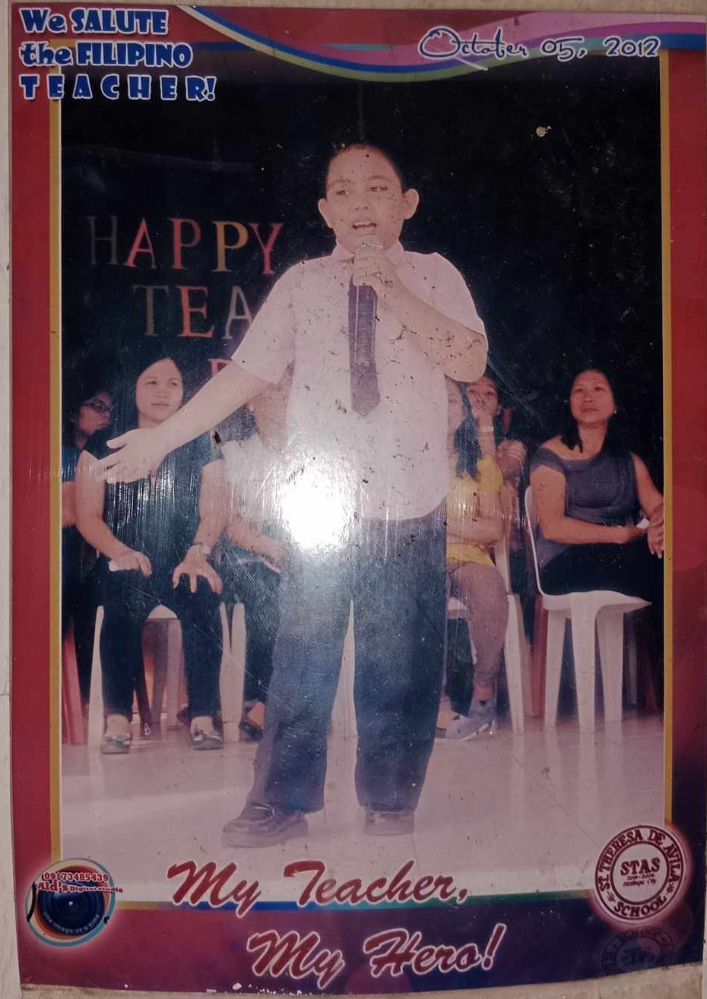Consistent Honor Student
John Michael Iwag at a young age has been taught well with the supervision of his mother who was once a teacher herself. He still had to his part in studying and reviewing for his exams but given how present his parents are in enforcing good study habits to him, he attributes most of his elementary success to them.
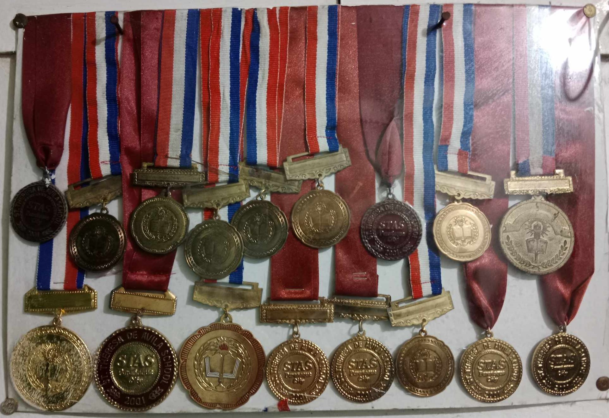 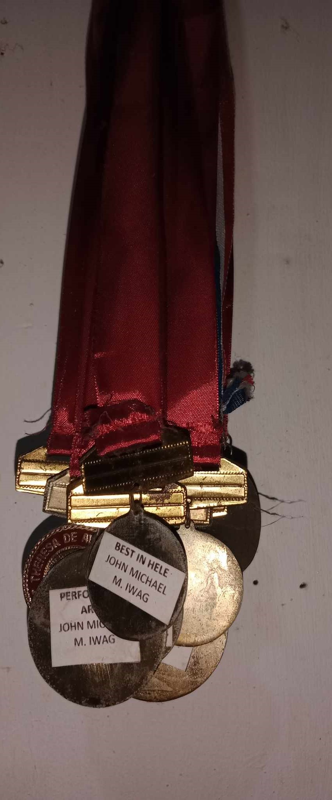 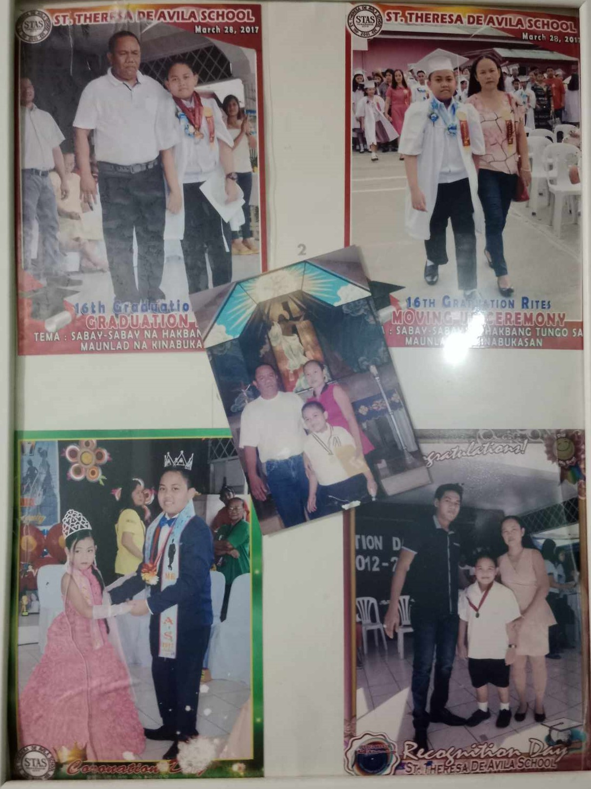 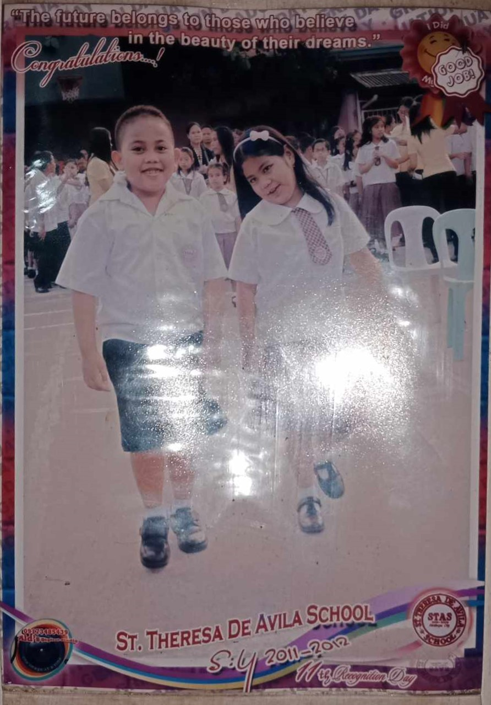Important Glimpse of Time
Apart from being young at that age, John Michael Iwag really find this period of time either unmemorable or filled of trauma to be deserving of being forgotten. But it is no different from every other past experience he has had even later in life and there are still people and events he can recall from this time but most of them will probably not come back on their own without being brought up again by someone else. Regardless, this time period is filled of rigorous book-based studying for John Michael Iwag which created a strong knowledge foundation for him.
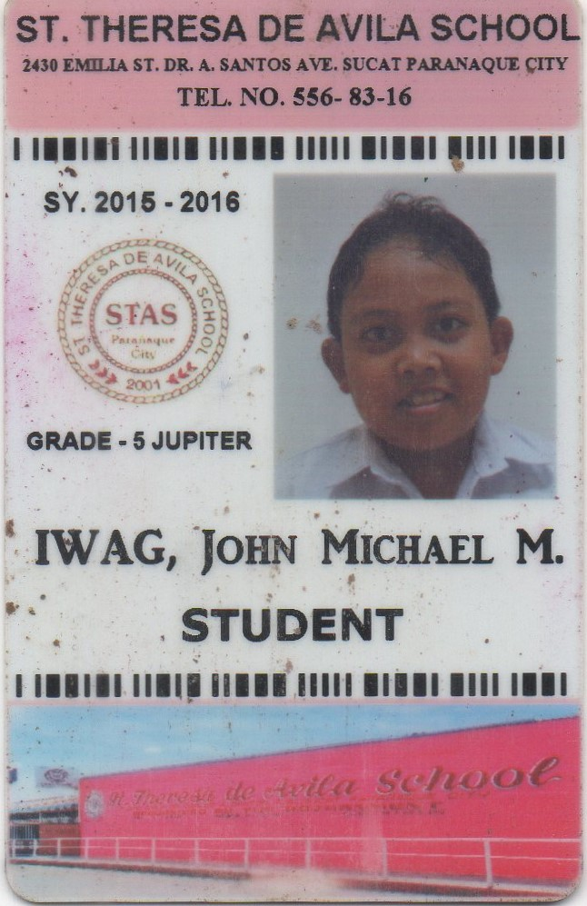ABOUT
TIMELINE
ACHIEVEMENTS
REMARKS
Parañaque Science High School
8322 Sampaguita Street 1704 Paranaque Metro Manila
Parañaque Science High School (PSHS) was concerned in 1988 by the late Mayor Walfrido N. Ferrer and his
sister Mrs. Flor Cordero. It envisioned to provide free quality secondary education to the exceptionally
bright elementary graduates of Parañaque, by having an enriched curriculum in Science, Engineering, Technology
and Mathematics. The idea of establishing a science high school was made after the success of Parañaque Municipal
High School (PMHS) students in the 1988 Regional Science Fair.
Their vision was referred to the Principal of
Parañaque Municipal High School (now Parañaque National High School) Mrs. Rosa V. Sioson, with other school
administrator: Miss Narcisa F. Catindig, Assistant Principal and Department Head of Mathematics; Mrs. Teresita Flores,
Department Head of English; and Mrs. Elizabeth C. Cabales, Department Head of Science. This was approved by the
Division Superintendent, Dr. Ricardo Sibug and the OIC Science Supervisor, Mr. Lino Rom, who signified their support
to the notion. Their collaboration marked the birth of PSHS in 1990. With twenty-one (21) students housed in a borrowred
classroom of PMHS, and teachers, supervised by the PMHS administrators, PSHS has proven its exceptionality.
2017-2023
John Michael Iwag spent most of his growth in this safe space for what was deemed as advance learning. Despite of beginning his academic venture with a lost note and some reluctance to even take an entrance exam in this school, it is one of the decisions he will never regret later in life not only for the quality education served from this institution, but also for the people he met and taught him several things in life that led to what he is now.
Grade 7
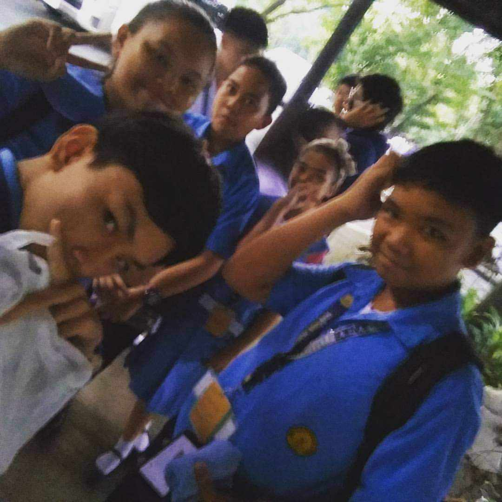Grade 9
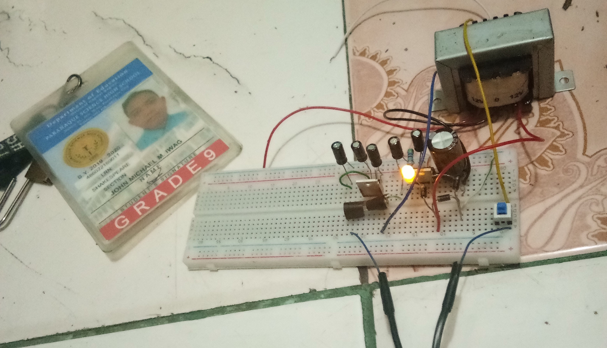Grade 12
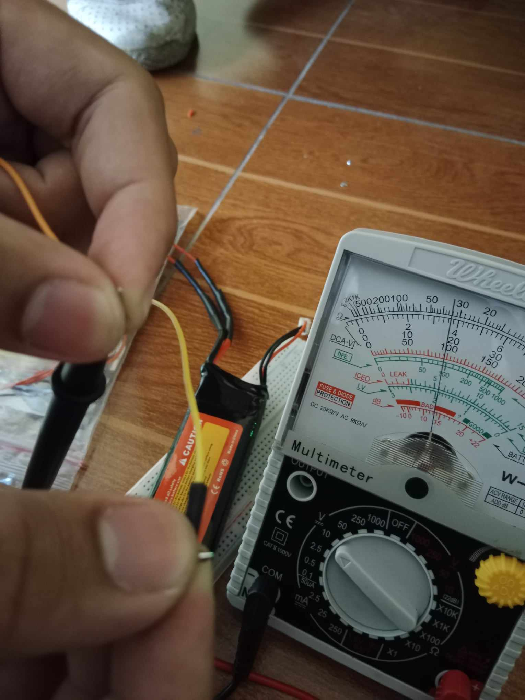When Learning was Indeed the Best Experience
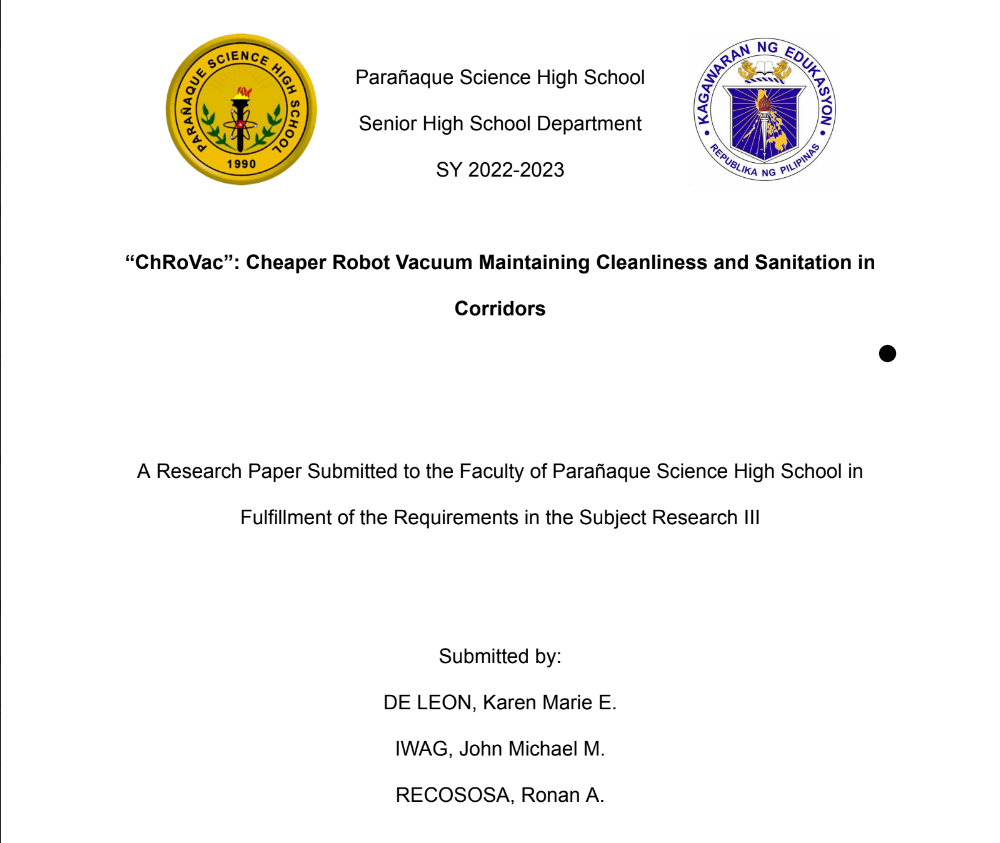The Cure
Not only did 2 years of JM's education being amidst the pandemic where Parañaque Science High School stepped in to continue providing quality education but also managed to teach JM several things in life particularly towards empathy and love for seeking knowledge. In contrast with the JM before he entered this school, he departed as someone who is highly-driven by his need to prove himself after realizing that he lived a sedative academic lifestyle in one of the most competitive yet comfortable learning atmosphere. And with that, he is on his journey to fulfill what he always wanted through learning how to build it.
 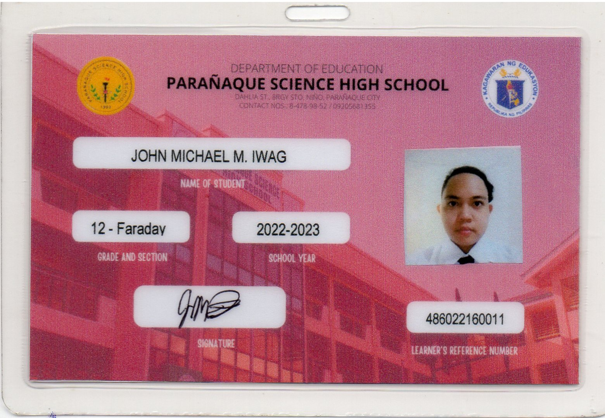
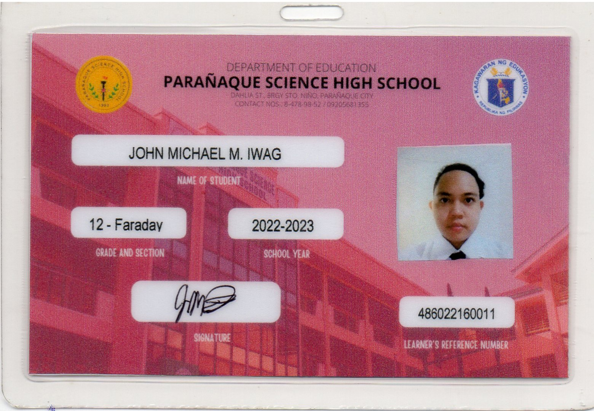
ABOUT
TIMELINE
ACHIEVEMENTS
REMARKS
Pamantasan ng Lungsod ng Maynila
Gen. Luna cor. Muralla St., Intramuros Manila, Philippines 1002
The Pamantasan ng Lungsod ng Maynila (from 'University of the City of Manila', abbreviated as PLM) is a city-government-funded local university situated inside the historic walled area of Intramuros, Manila, Philippines. It was established on June 19, 1965, and opened on July 17, 1967, to 556 scholars, all coming from the top ten percent of graduates of Manila's public high schools. PLM is the first tertiary-level institution in the country to offer tuition-free education, the first university funded solely by a city government, and the first institution of higher learning in the country to have its official name in Filipino. From its first enrollment record of 556 freshman scholars coming from the top ten percent of the graduating classes of Manila's twenty-nine public high schools, total semestral enrollment has grown to an average of 10,000. The college has expanded from a single college to twelve colleges, seven graduate, two professional schools, and a score of research and specialized centers, including a teaching hospital, an entrepreneurial center, and an integrated learning center for toddlers. It maintains a comprehensive distance-education and open university program for thousands of community health workers and public administrators in different regions nationwide, with affiliations and recognition from various national and international organizations and institutions. A study using cumulative data from 1999 to 2003 showed that PLM was among the top five schools nationwide in terms of board exam passing rate, and was one of three public universities in the top ten category.
2023-Present
Nothing much yet, this particular website is one of the first significant experiences of John Michael Iwag.
To Finally Do What He Wants
Being admitted to the university itself is one of the major accomplishments of John Michael Iwag
as he holds pride for being a non-manila student in his priority course in Pamantasan ng Lungsod ng Maynila.
At the same time, he is a DOST scholar benefiting from stipends and other benefits after passing the scholarship examination.
But most of all, he also has several practices and pending projects linked below. These showcases his pace in learning new technologies apart from what he considers as portfolio worth projects.
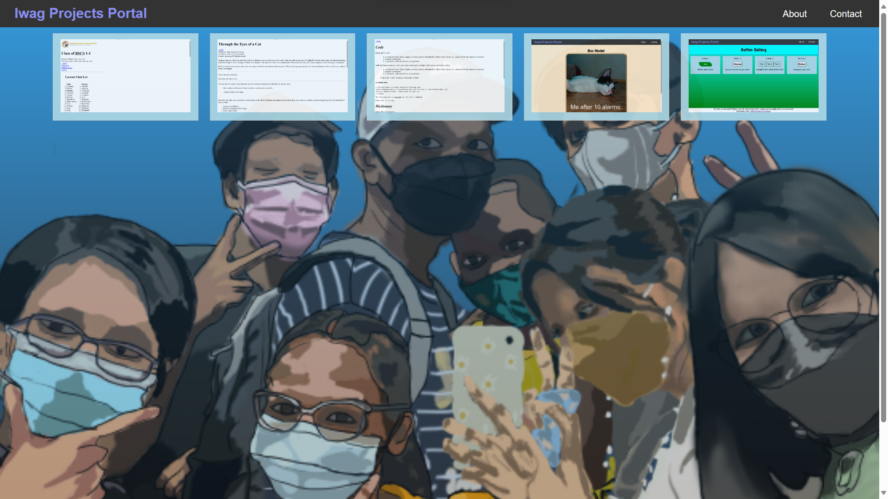A Visualization of Skills
As what was said in the intro, John Michael Iwag did not have much experiences with any programming
technology yet apart from some robotics through Arduino in his senior high school years, thus,
does not have much to show, well that's what he thought at firts. He came into decision that one of the
advantages of a website in showing one's skills is it being a multimedia platform allowing development
skills to be showcased unlike a printed resume or similar documents.
He believes that what makes someone knowledgeable is knowing how the thing works as a whole, and able to identify
all the wrong things within the project.
With that said, the following are the bugs found in this page:
- Uncentered background image due to prioritized parallax effect by fixed attachment
- Absurd timing for content swapping for typed text
- Unoptimized javascript performance
- A hidden header is inside each school toggle
- Border animation rotation causing hover overflow incosistencies and overflow on small screens
- The info in the table toggle all show if an info category has not yet been selected
- The table toggles below the schools options share a single toggle mechanic which causes information to not appear when you select a different school if you haven't selected a particular info category
- Missing back to top feature at the bottom of each info to allow seemless navigation